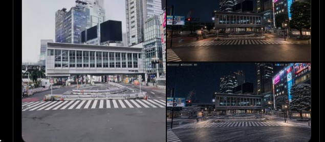

01 課題：3Dスキャンは「行けない場所」がそのまま欠損になる
3Dスキャンは、スキャンできていないところがそのまま欠損になります。高層ビルの屋上など、そもそも人が歩いて行けない場所は、徒歩スキャンでは撮れません。ではドローンを飛ばせばいいかというと、都内中心部の多くはドローン飛行禁止区域で、そもそも上空から撮影すること自体が許可されていません。つまり「上空からの絵が欲しいが、そこに機材を持っていく手段がない」という状態が、都市部のロケハンではよく起こります。
02 解法：UE5 + XGRIDs SDKで3DGSを取り込み、仮想カメラを飛ばす
そこで使ったのが、渋谷スクランブル交差点の3DGSデータをLcc2形式でUE5にXGRIDs SDK経由でインポートする方法です。一度3DGSとしてシーン化してしまえば、そこから先はゲームエンジンの中の話になります。カメラは物理的な制約から解放され、実際には立てないビル屋上の高さにも、道路の真上にも、好きなだけ動かせます。地上を歩いて集めたスキャンデータを土台にしながら、上空からのアングルだけは仮想カメラで作るというのが、この手法の骨格です。
03 AIでライティング・季節を変える ── プロンプトは「夜にして」だけ
UE5のビューポートで狙った画角が決まったら、その画面をそのままスクリーンショットして、画像生成AI（GPT）に渡すだけです。プロンプトは「夜にして」「冬にして」といった短い指示のみ。構図・カメラアングル・建物の配置といった正確性が必要な部分はUE5側（＝実スキャンデータ）ですでに確定しているので、AIに任せるのはライティングと季節感の作り込みだけで済みます。

04 この手法の強み
- 画角・ディレクション・正確性の担保 ── カメラワークと構図はUE5側で確定するため、AIまかせの生成にありがちな「狙った通りにならない」問題が起きにくい。
- 撮影コストの大幅カット＆スピード化 ── 現地での再撮影・許可申請・機材手配なしに、パソコンの中だけで画角を決められる。
- 何度でも試行・再撮影が可能 ── 一度3DGS化してしまえば、カメラ位置も時間帯も何度でもやり直せる。
- 撮影そのものの再発明 ── 「現地に行って撮る」から「スキャン済みのデータの中でカメラを動かす」への発想の転換。動画（カメラアニメーション）にも対応できる。
05 現状の限界：看板・文字・人工物は崩れる
ただし、条件付きの手法であることも正直に書いておきます。看板の文字や、電車・標識のような細かい人工物は、現状のAIデータ補完だと崩れます。実際に生成した画像を見ると、存在しないはずの構造物が現れる「ゴースト」や、電車が本来ないはずの場所に不自然に生成される破綻が確認できました。

看板や細かいディテールは、現状の手法だとこのようにざっくり欠損してしまいます。そこを細かくコントロールして、世に出せるクオリティで納品するのがプロの仕事だと考えています。具体的には、崩れやすい箇所はあらかじめ再撮影・手直しを前提に設計することで対応可能です。AIデータ補完の精度自体は、今後さらに向上を期待したいところです。
06 まとめ：すべてを生成させず「1枚のスキャンCG」を経由させる優位性
この手法のいちばんのポイントは、撮影のすべてをAIに生成させるのではなく、あくまで1枚の実スキャンCG（3DGS）を必ず経由させることです。構図・画角・正確性はスキャンデータと仮想カメラで担保し、AIには質感の仕上げだけを任せる。この役割分担があるからこそ、破綻を抑えながら「撮れないアングル」を実用レベルで作れます。ドローン禁止区域での上空カットに限らず、同様のワークフローに興味のある方はお気軽にお問い合わせください。
この記事で使われている渋谷スクランブル交差点の3DGSデータは、
ロケハン3Dのオンライン版で購入・閲覧できます
PLY／OBJ形式（3DGSウォークスルー付き）で提供。スタンダードライセンス ¥200,000〜（商用・非商用利用可）。同じデータでUE5×AIのワークフローを試してみたい方は、ぜひご覧ください。
物件データを見る →